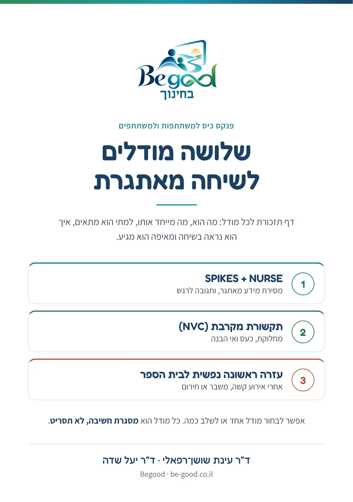
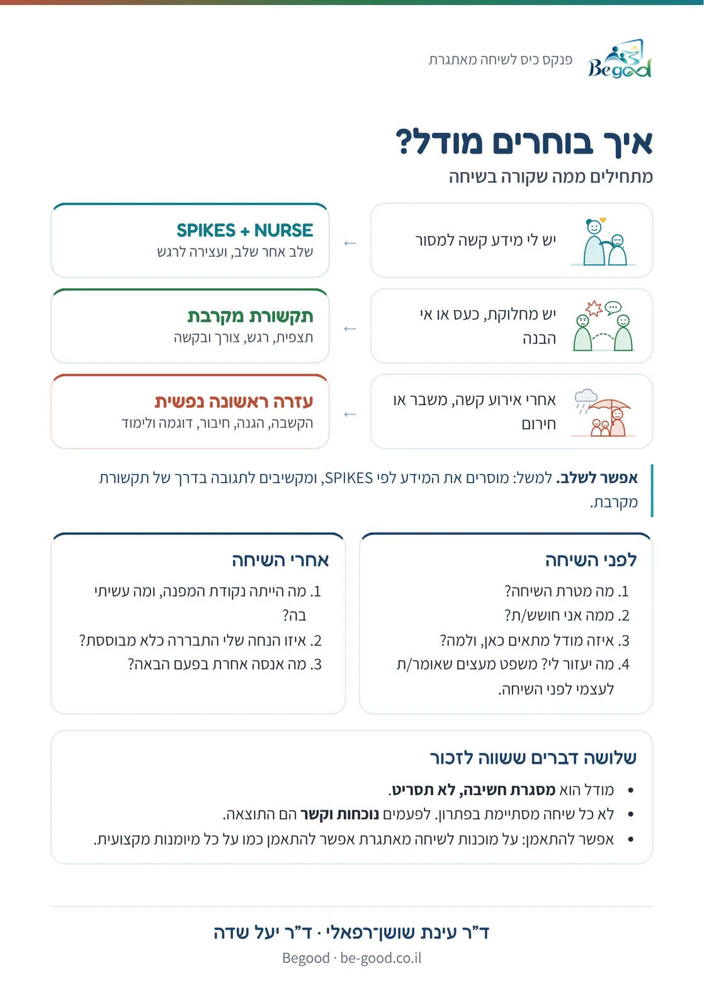
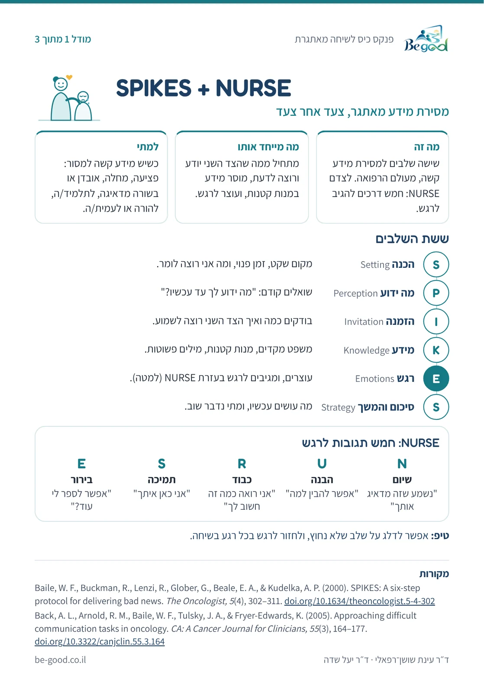
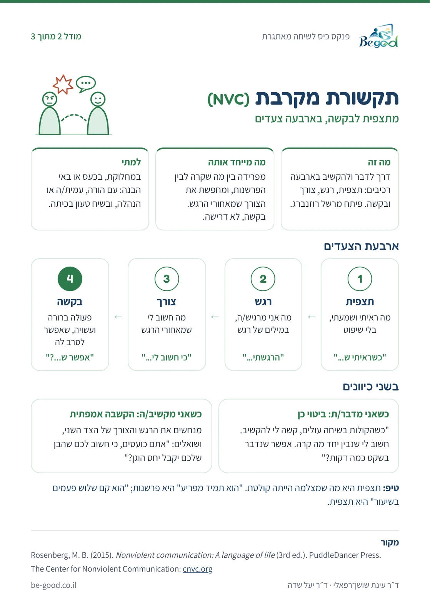
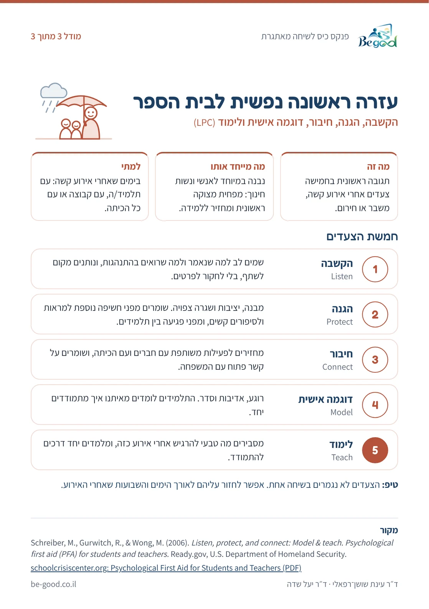

📱 הפנקס בטלפון
כדאי להוסיף את הפנקס למסך הבית בטלפון. כך הוא נפתח בלחיצה אחת, גם בלי אינטרנט, רגע לפני שיחה.
באייפון (ספארי):
- לוחצים על כפתור השיתוף (ריבוע עם חץ למעלה).
- בוחרים "הוספה למסך הבית".
- לוחצים "הוספה".
באנדרואיד (כרום):
- לוחצים על שלוש הנקודות בפינה.
- בוחרים "התקנת אפליקציה" או "הוספה למסך הבית".
כדי להתקין בטלפון: פותחים את הדף הזה בטלפון (אפשר לסרוק או לשלוח לעצמך את הקישור), ומוסיפים למסך הבית.




